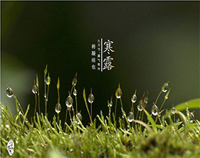
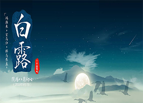

 寒露(10月8-9日)是农历二十四节气中的第十七个节气，属于秋季的第五个节气，表示秋季时节的正式结束；时间在公历每年10月7日~9日。是太阳到达黄经195°时。《月令七十二候集解》说：“九月节，露气寒冷，将凝结也。”寒露的意思是气温比白露时更低，地面的露水更冷，快要凝结成霜了。寒露时节，南岭及以北的广大地区均已进入秋季，东北进入深秋，西北地区已进入或即将进入冬季。
气温逐渐下降。白露、寒露、霜降三个节气，都表示水汽凝结现象，而寒露是气候从凉爽到寒冷的过渡。夜晚，仰望星空，你会发现星空换季，代表盛夏的“大火星”（天蝎座的心宿二星）已西沉。我们可以隐约听到冬天的脚步声了。
5
霜降为农历二十四节气之一，进入此节气天气渐冷，开始有霜。霜降一般是在每年公历的10月23日。这时中国黄河流域一带出现初霜，大部分地区多忙于播种三麦等作物。
每年阳历10月23日前后，太阳到达黄经210度时为霜降。霜降表示天气更冷了，露水凝结成霜。《月令七十二候集解》：“九月中，气肃而凝，露结为霜矣”。此时，我国黄河流域已出现白霜，千里沃野上，一片银色冰晶熠熠闪光，此时树叶枯黄，在落叶了。古籍《二十四节气解》中说：“气肃而霜降，阴始凝也。”可见“霜降”表示天气逐渐变冷，开始降霜。
6
 白露(9月7-9日)是农历二十四节气中的第十五个节气，当太阳到达黄经165度时为白露。
白露是秋天的第三个节气，表示孟秋时节的结束和仲秋时节的开始。露水是由于温度降低，水汽在地面或近地物体上凝结而成的水珠。所以，白露实际上是表征天气已经转凉。这时，人们就会明显地感觉到炎热的夏天已过，而凉爽的秋天已经到来了。昼夜温差可达十多度。阳气是在夏至达到顶点，物极必反，阴气也在此时兴起。到了白露，阴气逐渐加重，清晨的露水随之日益加厚，凝结成一层白白的水滴，所以就称之为白露。
3
秋分(9月22-23日)，农历二十四节气中的第十六个节气。南方的气候由这一节气起才始入秋。一是太阳在这一天到达黄经180°（秋分点），太阳几乎直射地球赤道，全球各地昼夜等长（不考虑大气对太阳光的折射与晨昏蒙影）。秋分过后，太阳直射点继续由赤道向南半球推移，北半球各地开始昼短夜长，即一天之内白昼开始短于黑夜；南半球相反。故秋分也称降分。
而在南北两极，秋分这一天，太阳整日都在地平线上。此后，随着太阳直射点的继续南移，北极附近开始为期6个月的极夜，范围逐渐扩大再缩小；南极附近开始为期6个月的极昼，范围逐渐扩大再缩小。
2018年6月21日，国务院关于同意设立“中国农民丰收节”的批复发布，同意自2018年起，将每年农历秋分设立为“中国农民丰收节”。
4
立秋(8月7-9日)，是农历二十四节气中的第13个节气，更是秋天的第一个节气，标志着孟秋时节的正式开始,"秋"就是指暑去凉来。到了立秋，梧桐树开始落叶，因此有“落叶知秋”的成语。从文字角度来看，“秋”字由禾与火字组成，是禾谷成熟的意思。秋季是天气由热转凉，再由凉转寒的过渡性季节。
“立秋”到了，但并不是秋天的气候已经到来了。划分气候季节要根据“候平均温度”，即当地连续5日的平均温度在22摄氏度以下，才算真正秋天的时节。中国地域辽阔，虽各地气候有差别，但此时大部分地区仍未进入秋天气候，况且每年大热三伏天的末伏还在立秋后第3日。尤其是中国南方此节气内还是夏暑之时，同时由于台风雨季节渐去了，气温更酷热，因而中国医学对从立秋起至秋分前这段日子称之为“长夏”。 1
处暑(8月22-24日)，即为“出暑”，是炎热离开的意思。处暑是农历二十四节气之中的第14个节气，时间点为公历8月23日，太阳到达黄经150°。
处暑节气意味着即将进入气象意义的秋天，处暑后中国黄河以北地区气温逐渐下降。
天文专家称，处暑当天，太阳直射点已经由“夏至”那天的北纬23°26′，向南移动到北纬11°28′。北京城区，白昼长度已经由夏至的15小时缩短到13小时25分钟，正午太阳高度也由夏至的73°32′降低至61°34′，人们可以明显感觉到太阳开始偏南了。随着太阳高度的继续降低，所带来的热力也随之减弱。
2